Change of Blog url.
I have decided to move my blog from the original http://ian-barton.com to http://ianbarton.co.uk . All the pages from the original site are here. If you go to the old url, you should be automatically be redirected here.
I have decided to move my blog from the original http://ian-barton.com to http://ianbarton.co.uk . All the pages from the original site are here. If you go to the old url, you should be automatically be redirected here.
My blog has languished for a few years. There are a number of reasons: time pressure, laziness and a few problems with Pelican. I have decided to use Nikola and my static site generator. I have converted the text in all the old posts to work with Nikola. However, there is a lot of work to update all the embedded photos. At the moment a lot of posts have embedded html which is incompatible with Nikola, so raw html and not photos are displayed! I am steadily working my through old posts fixing this.
I haven't included what I would be wearing, which would usually include a Rab Vapour Ride Lite jacket. In hot weather this would go inside the rucksack. In warm weather I wear Rab Treklite trousers. In cooler weather I wear my Mammut Base Jumps.
This is what I would typically take on a Spring/Autumn trip. In summer, if the forecast was good, I wouldn't take either the cagoule, or the waterproof over trousers, but would substitute either a Montane ???? or Marmot Dr-Clime windshirt.
I prefer to camp high up, so it's usually chilly in the evening and early mornings. The Montane prism jacket, worn over my base layer keeps me nice and warm. The Montane prism trousers
| Item | Weight (g) |
|---|---|
| Rucksack POD Black Ice | 1780 |
| Green silnylon stuff sack | 24 |
| Orange silnylon stuff sack | 30 |
| Yellow Exped stuff sack | 37 |
| Compass | 28 |
| 2 x AA cells | 48 |
| TekNet rechargeable battery | 176 |
| Micro usb | 13 |
| Phone | 224 |
| Panasonic camera | 435 |
| 2 x GoPro batteries | 51 |
| Pot cosy | 34 |
| GoPro | 135 |
| Sun glasses and case | 72 |
| Kindle | 299 |
| Prism jacket | 446 |
| Prism trousers | 323 |
| Montane Cag | 293 |
| Headtorch | 176 |
| Merino leggings | 159 |
| Merino top | 183 |
| Socks | 79 |
| Map | 84 |
| Ortlieb map case | 70 |
| Garmin eTrex | 186 |
| Tyvek footprint | 200 |
| Trowel | 60 |
| Fire steel | 49 |
| Berghaus paclite waterproof trousers | 217 |
| Alpkit BruPot | 266 |
| X-Mug | 32 |
| Titanium long handled spoon | 12 |
| Spork | 10 |
| Primus Gravity | 300 |
| Gas canister (250g) | 300 |
| 3 x Freeze dried meal | 360 |
| 5 x Hot chocolate sachets | 63 |
| Platypus x 2 | 78 |
| Travel Tap | 297 |
| Rab Alpine 400 sleeping bag (inc. stuff sac) | 938 |
| Exped Synmat UL | 396 |
| Exped pillow | 56 |
| Tent (TN Superlite Voyager) | 926 |
| Poles | 424 |
| Pegs | 210 |
| Supermarket carrier bags X 2 | |
| Total | 10579 |
Last year I bought a Giant Defy 2. However, I didn't want to ride it through all the mud and salt in the winter months, so decided to buy a cheap bike to use in winter. I did quite a bit of research and decided to get a Decathlon Triban 500 SE. There is a more detailed review of the Triban 500SE road.cc .
I had to go into Decathlon with my daughter to buy some skiing equipment and had chance to look at the 500SE. It seemed to be a decent bike for the price and I had read several positive reviews. I ended up coming out of the store with one.
Decathlon Triban 500SE
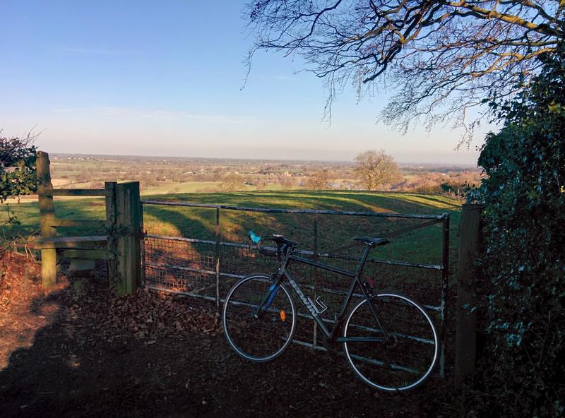After a few local rides of between 20 and 40 miles I was quite impressed. The microshift gears (3x8) weren't as smooth a the Tiagra on the Giant, but changes were positive with no missed gears. I have got used to a compact gear set on the Giant, which I prefer to the more traditional three front rings. However, there isn't anything around here that's steep enough for me to need the small front ring, so it wasn't really a problem. The saddle was a bit uncomfortable after a couple of hours riding. However, it can't be that bad as I have a better spare saddle at home and I haven't bothered changing it yet! The carbon fork absorbs road vibrations nicely. The brakes do their job of stopping you with minimum fuss, but I needed to pull a bit harder than on the Giant.
I did change the tyres for Schwalbe Durano Plus folding tyres, as most of my riding is along country lanes, where punctures from hedge cuttings are common.
Having ridden it for a couple of months the freewheel packed up about 5 miles from home. I had to call out International Rescue and put the bike in the boot of the car. Decathlon didn't have any freewheels in stock, so gave me a complete new wheel. Definitely excellent customer service. They showed me the broken freewheel which had rusted and the bearings were badly worn on the drive side. I wash my bike after every ride in the winter and am careful not to get detergent or GT85 anywhere near bearings.
Rear cassette after 1500 miles
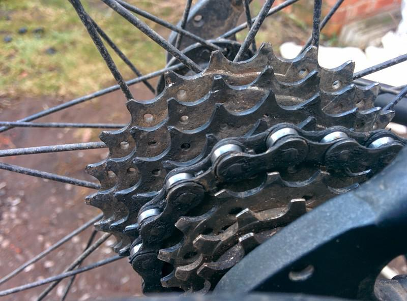After 1500 miles the gears began to skip. Measuring the chain it didn't appear unduly worn. However, the teeth on the cassette looked just like sharks teeth! My LBS replaced the cassette and chain, plus the cables.
So what's the final verdict. Overall I am happy with the Triban. I enjoy riding it and I don't worry too much it getting plastered in muck and grit. For the price it's a good buy, but don't expect the drive chain to be as durable as a more expensive bike.
I prefer gas for cooking and my stove of choice is the Primus Gravity. This is a remote canister stove, with a pre-heater, which makes it suitable for use in colder weather. Almost all my camping cooking is just a matter of boiling water to make a hot drink, or prepare a freeze dried meal.
I have looked at Jetboil stoves, but decided that they weren't for me because they were too heavy and the long tall shape makes them potentially unstable. However, if I needed to melt snow they would probably be my primary choice. One thing I haven't seen other manufacturers make is a cooking pot with a heat exchanger on the bottom, which could potentially improve the performance of a normal gas stove. However, Alpkit have now made a cooking pot with built in heat exchanger. I decided to buy one with the hope that it would reduce the time it takes to boil water on my stove and potentially save gas.
Alpkit BruPot test setup
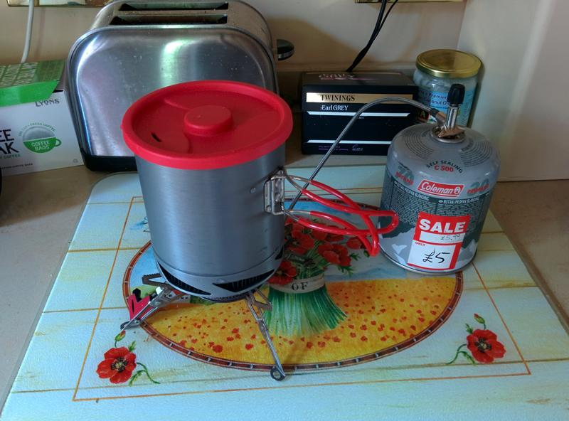The Brupot was delivered with the typical rapid efficiency. I wanted to compare it to my MSR stainless steel kettle, which is my usual cooking pot. Both vessels hold 1 litre of liquid, but the Brupot is slightly slimmer and therefore narrower. The Brupot has a plastic detachable lid, with a drinking slot so you can use it as a cup. It has detachable handles, which are covered in plastic so you don't burn your hands. There is a tightly fitting neoprene sleeve, which acts as a pot cosy. However, Alpkit recommends that you remove this when cooking. Since the sleeve is a tight fit, it's effectively useless. Can you image trying to fit a tight sleeve round a pot full of boiling water without burning your hands?
Alpkit BruPot and MSR kettle
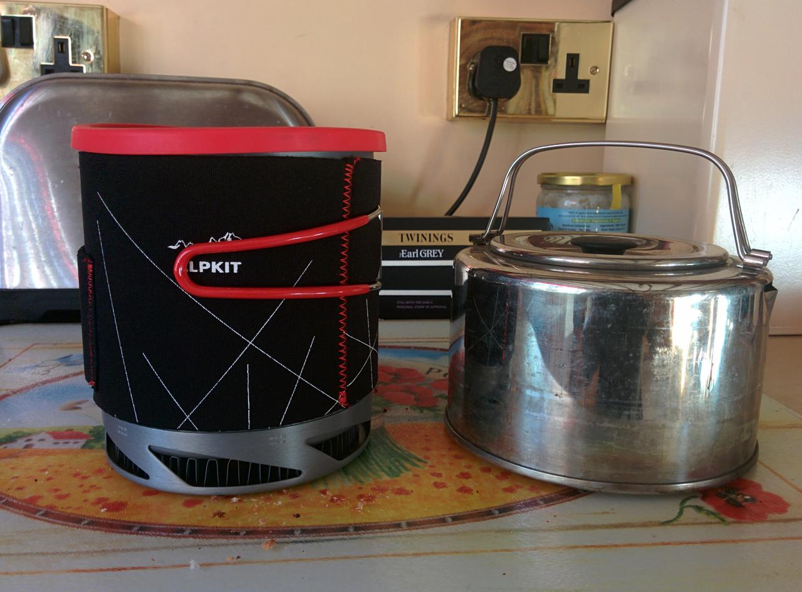I decided to do a head to head to see how long each pot would take to boil 500ml of water. I used my Primus stove with a full 500g canister. The test was conducted in the kitchen, so I didn't bother using a wind shield. I adjusted the flame on the stove so it didn't come round the sides of the pot and I didn't alter the flame setting when I swapped the pans. Each pan was filled with 500ml of cold water from the tap and placed on the stove.
I measured the time it took a continuous jet of steam to appear, which should correspond to a rolling boil. I didn't take the top off either pan off while it was heating the water, as this would increase the time to get a rolling boil. Thus there may have been a small error in judging when a pot was actually boiling. Also I didn't conduct another test with no lids on the pots, which would have made it easier to see if there was a rolling boil, as this isn't the way I use the pot when camping. I repeated the test three times. Between each set of repeat experiments I turned off the gas, then re-lit the stove , so the times for each run can't be summed to give an average, as the gas flow was probably different for each run.
Much to my surprise the Alpkit BruPot was slower to reach a rolling boil than the MSR, by about ten seconds in each test. That's not a big difference, but I was expecting the BruPot to be significantly faster because of the heat exchanger. I like the BruPot and it will probably replace my MSR kettle, because the handles and top are better. However, it seems that the heat exchanger doesn't work for my use case.
The Alpkit Brupot weighs 266g, including the bag and my MSR kettle weighs 254g.
It was pointed out to me that I really should also be measuring the weight of gas used. In my original experiment I didn't weight the gas canister. I believe my conclusions were valid as I didn't alter the gas flow between swapping pots and I was starting with a full 500g canister, so I would have expected flow to remain almost constant, so the weight of gas consumed would be the same. Also in the second run I swapped the order of the pots in the test, which should have shown up any differences caused by changes in gas flow between tests. In both cases the MSR boiled faster.
However, in the interests of accuracy I repeated my experiment and weighed the gas canister at the beginiing and end of each test.The first time I did this I kept the canister attached to the stove and stood the canister on top of the scales. I didn't alter the setting of the valve between pots, but did note the weight of the canister before and after the pot boiled. I did two separate runs, restarting the stove for each run.
Water was from the cold tap, which was allowed to flow for a couple of minutes first, so all the water used shuld have had the same starting temperature.
Whilst I believe that the boil times are comparable within each run, the effect of the hose attached to the top of the canister meant that the weights probably were not accurate. So, I repeated the whole thing again, but this time removed the gas canister from the pipe before weighing it. Since when I re-lighted the stove, I couldn't be certain that I was using the same flow rate I believe that the times for this set of results are not comparable, but the weight of gas consumed is.
| Start Weight | End Weight | Gas Used | Time to boil |
|---|---|---|---|
| 513 | 501 | 12 | 4:26 |
| 493 | 480 | 13 | 3:54 |
| Start Weight | End Weight | Gas Used | Time to boil |
|---|---|---|---|
| 501 | 493 | 8 | 4:12 |
| 480 | 469 | 11 | 3:20 |
| Pot | Start Weight | End Weight | Gas Used | Time to boil |
|---|---|---|---|---|
| Alpkit | 599 | 584 | 15 | 4:09 |
| MSR | 545 | 534 | 11 | 3:30 |
| Pot | Start Weight | End Weight | Gas Used | Time Time to boil |
|---|---|---|---|---|
| Alpkit | 572 | 555 | 17 | 3:52 |
| MSR | 583 | 573 | 10 | 3:31 |
The difference in performance between the BruPot and the MSR kettle are quite small and probably have little effect in real world use. The only real surprise is that in my setup the hest exchanger doesn't seem to have any positive effect. However, I still like the Alpkit BruPot and one advantage over my MSR is I can fit a 200g gas canister inside it.
A couple of years ago my son wanted to do a photography project for school. We had recently bought a Canon EOS 550D DSLR, which he was keen to use. While wasting time browsing various photography sites, I found several references to using the Canon for making time lapse films. The basic concept is that you take a sequence of still photos over several hours and then combine them together into a video format. Thus you can condense many hours of still photography into a short video, which shows a speeded up version of the scene you photographed.
Certain types of photography are well suited to making time lapses. Astro-photography and landscapes are a couple of obvious candidates. Apart from a suitable camera, you need a few additional bits of equipment:
If you are going for a long sequence consider getting an extended battery pack. If the temperature is low your battery life will be considerably reduced. You might want to try warming your battery pack, but this can also cause condensation on the lens!
You can trigger the shutter of a Canon either from a PC via its usb port, or by using something like a RaspberryPi. See:
However, for outside work this is very inconvenient and prone to failure. It's far better to use an intervalometer. The basic functions are:
There are a lot of these around. Here is an example on Amazon. They all seems to be made in the same Chinese factory. Try Googling "Hongdak MC-36B". The cost is £10 upwards depending on who you buy it from. If you are serious about time lapse photos buying one of these will save you endless hours of frustration. Note different models support different cameras. Make sure you buy the right one for your camera! There is a good review of the Hongdak here.
Note that neither the Pi, nor the GoPro are suitable to taking photos of stars, although the rumoured GpPro4 is meant to fix that problem.
Definitely a geek solution. Relatively cheap when bought with a camera.
Disadvantages:
Why use a GoPro?
Some disadvantages:
The factors to consider are the ISO setting and length of exposure. If you set the ISO too high, the camera sensor will produce a lot of noise and degrade the image. If you set the exposure to be too long, the stars will move while the photograph is being exposed, leading to blurred images.
Make sure you turn auto-focus off. The infinity setting on your lens is probably not going to give you a sharp image. Make sure you focus manually. I tend to use an aperture of around F5.6, but this will depend on your lens. Generally using your lens's widest aperture won't give you the best results.
Set your white balance to around 3500K. This helps to reduce redness from any sodium lighting that is around and will give you a blue sky. If you leave your shutter open to log, you will get star trails, as the stars move across the sky during the exposure because of the earth's rotation. To avoid star trails limit your exposure to 1000/focal length.
If you want to capture star trails, take multiple exposures over a few hours. You can the "stack" the multiple images to produce trails. There are several applications for Linux:
If you are in the northern hemisphere you will get the best trail effect by pointing your camera towards the north. The pole start appears fixed in position, so if your camera is pointing towards it the stars will form trails centred around the pole star.
You may also want to take a dark frame. Simply put a lens cap on and take a photograph using the same settings you use for taking the star trails. You can use the dark frame later on as a method of removing background noise from your photographs.
I live in the countryside and am a keen mountaineer, so have lots of opportunities for landscape photography. One of the key requirements is to identify suitable spots to take time lapses in advance. Sunrise/sunsets are a good place to start. However, you need to know where the sun will be when it sets/rises and be in the right location to record the event. Usually a clear view of the horizon, or some definitive feature e.g. a mountain.
Often success/failure will depend on the weather. The best landscape conditions are often in the clear atmospheres of autumn, winter and spring, when haze is minimal. Some clouds in the sky add interest, as they will move during the period of your filming. Be prepared for frequent disappointments. Often cloud will be too extensive, or the mist will descend at an inconvenient moment.
It's particularly important to let your equipment equilibrate to the ambient temperature. If you don't do this you will almost certainly get condensation on the lens, which will ruin all your efforts. Allow around 30 mins for the temperature of the camera to equilibrate. Sometimes there is so much humidity that you will get condensation anyway. This can often happen when it's cold.
So you have had a successful filming expedition and now have hundreds of JPG's you want to convert into a Hollywood Epic. There are many tools available, but I use ffmpeg and mencoder.
ffmpeg is correctly known as the Swiss army knife of video manipulation. It is in perpetual beta, the command line options get changed on the developer's whim and it can probably even make the tea. There are a whole raft of video conversion options. I freely admit that I don't understand most of them, but I'll try and explain why I chose the ones I use.
First you need to check that your JPG's are numbered sequentially. If they aren't I'll leave you to write a script that renames them. In the case of the GoPro file names look like: G0040383. Now ffmpeg has a very useful option: startnumber that will start at the file you name and process all the files in the directory with sequential numbers. However, if there is a gap in the numbers it will grind to a halt. Even better ffmpeg understands shell globs, so:
ffmpeg -f image2 -start_number 91495 -i G00%d.JPG
will process all the files in the directory that start with "G00" beginning with "G0091495".
Almost all of my ffmpeg options are taken from waan's site.
So my full command line looks like:
ffmpeg -f image2 -start_number 91495 -i G00%d.JPG -r 25 -s 1280x960 -vcodec libx264 -b:v 30000k timelapse_25fps.mp4
This creates a video of 25 frames per second using an h264 codec. If your time lapse seems to be going too quickly, you can adjust the speed using mencoder:
mencoder -speed 0.25 -ofps 25 -ovc copy timelapse_25fps.mp4 -o quarter_speed.mp4
The above command will slow things down to a quarter of the original speed.
So now you have the perfect time lapse video and you want to spice it up by adding an audio track. I am assuming that you already have a suitable mp3 to hand. There will almost inevitably be a mismatch in the duration of the mp3 file and the video. If the mp3 is too long you can trim it to the length of the video when you multiplex the file:
ffmpeg -i timelapse.mp4 -i music.mp3 -map 0:0 -map 1:0 -codec copy -shortest output_video.mp4
If the mp3 file is too short you can create a loop that is longer than the video (thanks to StackExchange for this):
sox -e ima-adpcm short_audio.mp3 looped_audio.mp3 repeat 1000 # adjust count as necessary
Now use the shortest option with ffmpeg to multiplex the tracks, as per the instructions above.
I have uploaded several time lapses to YouTube. These are all quite short and only intended to show you the sort of effects you can achieve:
The summer weather looked set to continue for at least a few more days, so I decided to have another go at the walk that I had done in July. On the last trip I had forgotten my stove, so had to complete the whole walk in a very long ten hour day. his time I was planning to climb Pen Llithrigg yr Wrach and traverse the ridge over Pen yr Helgi Du and Craig yr Ysfa to a camp site a couple of hundred feet below the summit of Carnedd Llewelyn.
A hazy Carnedd Llewelyn from Pen Llithrig yr Wrach
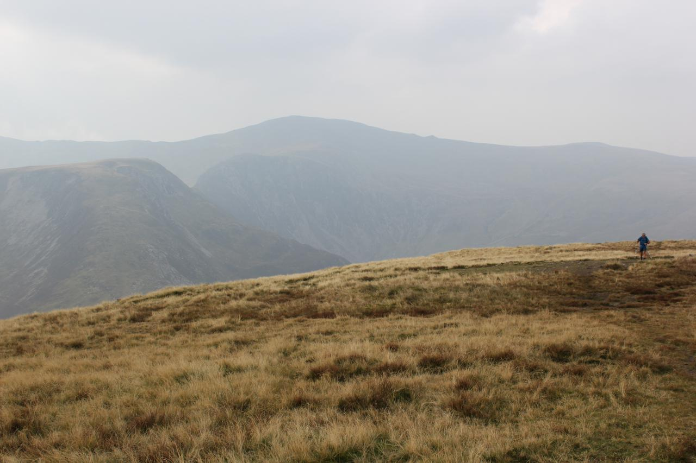I didn't leave home until mid-morning. When I arrived at the start of the road up into Cwm Eigiau there were signs at the bottom of the road warning of long delays. Luckily I wasn't held up by what turned out to be fairly minor repairs. It was midweek, so there were only about three cars in the car park when I pulled in.
Although it was hot, the heat had made the atmosphere hazy and some of the summits were obscured by mist. I double checked all my gear before setting off to make sure that I hadn't forgotten something important like the stove. Feeling confident that I hadn't forgotten anything I set off along the track towards the reservoir. After about half a mile I realized that I hadn't turned the GPS on! I seldom use the GPS for navigation, but like to keep a record of my track.
Mist over Tryfan and the Glyders
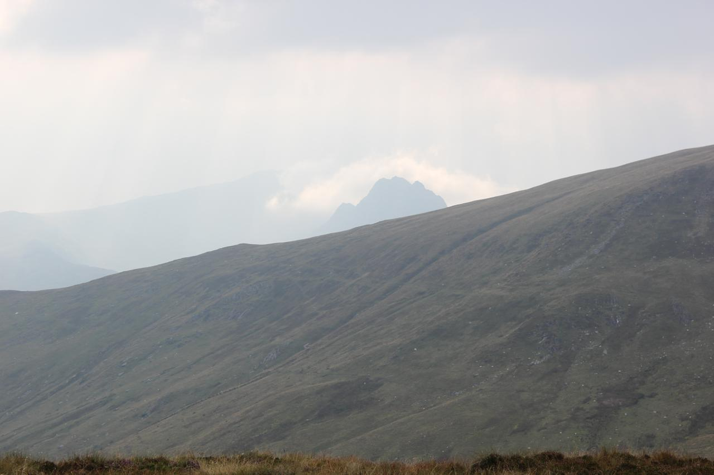I filled my 2 litre and 1 litre Platypus water bottles from the reservoir and also the Travel Tap. I wasn't sure if this would be enough, but it turned out towards the just about the right amount, as I had about 500ml spare in the morning for the walk back. There are not really any water sources on top of the Carneddau, except for some stagnant peaty pools. In the past I have used water from these and filtered it through the Travel Tap. I don't normally bother filtering the water from the reservoir.
Plodding along the track I soon reached the old quarry workings at ??? and stopped for a rest. For the first time I had brought the GoPro video camera with me, so I made a couple of short videos of the view. The path beyond the quarry is vague, so I headed up diagonally towards the ridge. Sweating in the heat, I finally found the path along the crest of the ridge that leads up to the summit of Pen Llithrig yr Wrach.
On my last trip I had started to get cramp on the pull up to Pen yr Helgi Du and wanted to avoid it this time. I stopped for a rest, drank quite a lot of water and ate a couple of flapjacks. Moel Siabod was only just visible through the haze and the tops of Tryfan and the Glyders were covered in mist. While I was resting on the summit a man appeared up the slope from Pen yr Helgi Du. While chatting to him we heard a Chough calling. I said that had seen several Grouse lower down. Apparently Grouse numbers have dropped considerably since the 1970's when the moors were managed.
Craig yr Ysfa and Pen yr Helgi Du at sunset
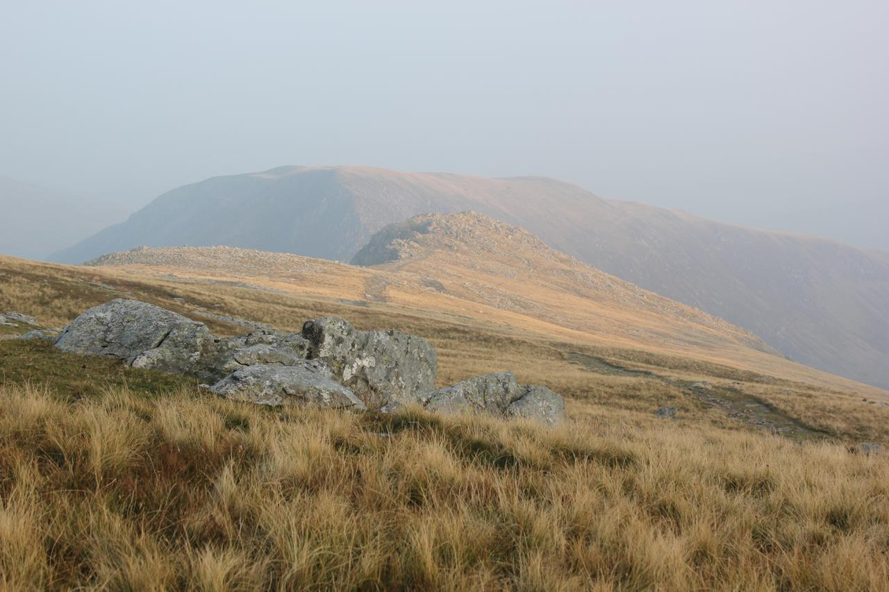I dropped down to the col between Pen Llithrig yr Wrach and Pen yr Helgi Du. The slope up to the summit of Pen yr Helgi Du didn't seem too bad this time and I didn't get cramp in my legs. I walked along the summit ridge and began the descent of the ??? ridge. It was here that I met the only other person I saw all day. I stopped to let him pass as he climbed towards the summit. The scramble down is quite steep, but fairly short. If you don't like exposure, make sure that you keep to the left (facing out). I was soon down at Bwlch Eryl Farchog and began the climb towards Craig yr Ysfa. The atmosphere was beginning to clear and the views were improving as evening began to draw in. The short scramble up the rocky step was awkward with a heavy sack, but I was soon standing on the summit of Craig yr Ysfa. I had a quick look over the top at the pinaccles near the top of Amphitheatre Buttress. I have done this climb several times in the past and it's one of the best long mountaineering routes in Wales. The climbing is easy apart from the short crux section. If you can jam, climbing the crack to the top of a short wall is easy. There is then a very exposed step right onto a small ledge. Faling off here would involve a long fall into the gulley below. However, you can drop a long sling over a pinnacle, which protects the step round and the ground above is easier. The final section of easy climbing over the pinaccles is a delightfully exposed scramble. Maybe next time I'll climb up from Ogwen, dump my sack on the top, descend to the bottom, the climb back up to my sack and camp on Carnedd Llewelyn.
It was now around 5:30, so I decided to camp on the flat grassy shelf on the SE ridge of Carnedd Llewelyn that I had used a couple of times in the past:
The site is quite sheltered and there are several piles of rock nearby, which are useful tables. It's quite near to the main path up Carnedd Llewelyn, but far enough away that you are not likely to be noticed by people passing by. It was now shortly after 6:00pm and there was nobody else visible anywhere on the Carneddau. The site is a bit tussocky, but I had soon found a nice flat area to pitch the tent. I pitched it with the door facing East, overlooking Cwm Eigiau so I could see the dawn from the tent door.
I soon had the stove going and boiled enough water to make a hot chocolate and re-hydrate a Bewell Chilli. Despite sitting in a pot cosy for 10 minutes, the rice in the chilli didn't seem to have rehydrated properly. I boiled some more water, poured it into the pouch and waited another 5 minutes. The rice still didn't seem to be properly cooked, but I ate it anyway. I was tired so after taking a few photos I got into my sleeping bag. After a short rest, I got out of the tent to set up the GoPro. I wanted to take a series of still photos of the dawn at intervals of 30 seconds and then turn these into a video of the sunrise. I spent some time fiddling around with the various GoPro brackets that I had brought with me and eventually managed to rig up something that locked to my walking pole. There then followed a short pantomime, while I tried to find a spot in the grass where I could push the walking into. Finding somewhere that didn't have a rock a few inches under the ground proved difficult. When I had found a good spot I set the GoPro up facing over Cwm Eigiau and then retired to bed.
Carnedd Llewelyn campsite at sunset
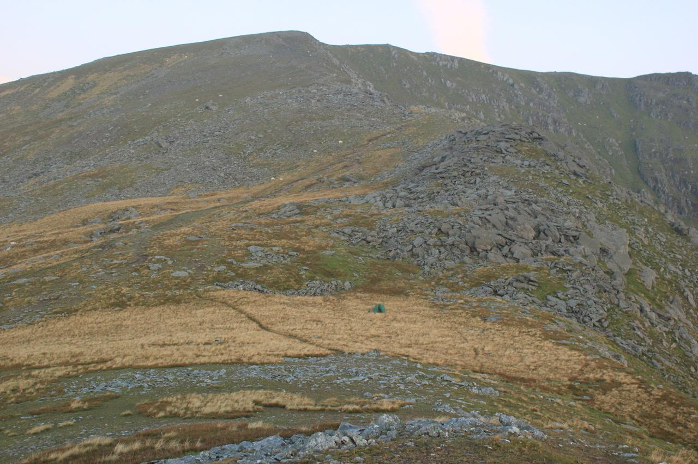The GoPro is in a weather proof case, so if it rained it didn't matter. Keeping it inside the tent isn't a good idea, as it's warmer inside the tent than outside, or at least it should be! Taking the camera from a warm tent to a cold outside usually results on condensation on the lens which spoils your photos.
The battery life of a GoPro in time lapse mode is around two hours. It was quite cold at 3000 feet, so I expected the battery life to be shorter. I set an alarm for 5:30am, so I could turn the GoPro on to start taking the time lapse photos some time before the sun came over the horizon . I woke up before the alarm went off and the Eastern sky was already beginning to glow red. I scrambled out of the tent and set the GoPro off. I made myself a hot drink while I watched the horizon as it gradually got lighter and the sun finally appeared. Unlike the previous day the atmosphere was crystal clear and the summits were clear of mist. However, by about 7:00am mist had drifted over from the west and all the views were obscured.
I packed away and began the trudge up towards the summit of Carnedd Llewelyn. I could see patches of blue above me, but all the views were obscured. From the summit, I set off along the ridge heading towards Foel Grach. I began descending and was about to get the map out to check my position, when I dropped below the mist. I could now see the path that descends to Gledrffordd. I thought about continuing over to Foel Grach and then descending the ridge that leads from the summit down to Gledrffordd, but the mist was coming and going over the summit. I didn't want to walk all the way up to the summit only to find the view obscured by the mist.
Tent at dawn. Mist rolling in.
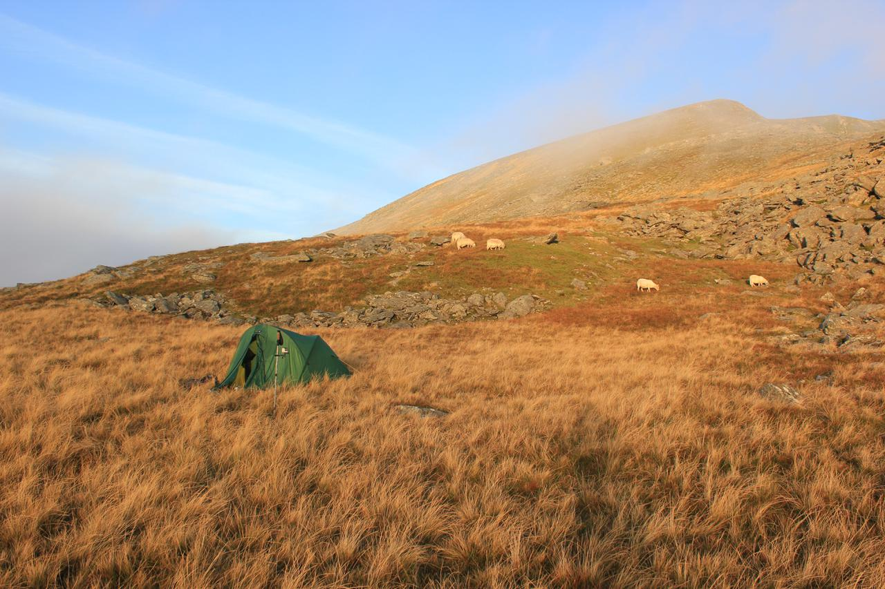The descent was straightforward and this time I didn't make the mistake of climbing onto the top of Craig Eigiau, but contoured along below the ridge. As I joined the Landrover track I met what appeared to be a school party who were being shown how to find where they were on the map by their teacher. Further along the track I passed a man and what appeared to be his daughter heading up the track. When I reached the car park there were only two or three other cars parked there. Being able to walk midweek is definitely and advantage if you want the hills to yourself.
There are a number of Coast to Coast cycle rides in the UK. This series of posts is about the ride that starts at either Workington or Whitehaven and finishes at Tynemouth or Sunderland. Depending on the route you choose the ride is around 140 miles long with approximately 15,000 ft (altitude calculated from my GPS tracks) of ascent. We had decided to do the ride over three days.
There were five of us planning to do the ride: my son with two of his friends and one of my brothers in law. My brother in law could only join us for the last two days. Also I wanted to let my son ride in a group with his friends, without having his ancient Dad tagging along. This meant that I was effectively riding solo, since I do almost all my cycling alone this suited me.
I had done the Way of the Roses last year on my hybrid bike. I had carried a fair bit of gear in panniers. For the C2C I decided to use my road bike and carry a minimal amount of gear in a rucksack. Most cyclists don't like carrying a rucksack, but since I do a lot of walking and climbing, I find I prefer to carry things in a rucksack rather than in panniers. As I was using my road bike, I made a couple of modifications to the "Official Route". On the descent from Whinatter I followed the road, rather than the track through the forest. Leaving Keswick I cycled past Castlerigg Stone circles before rejoining the C2C at Threlkeld, thus avoiding the railway track. On day three I avoided cycling along the Waskerley Way, taking the B road that runs parallel to it. However, my son, who was also on his road bike cycled, along the Waskerley Way and said it was fine.
Depending on the route you take the C2C is around 140 miles long with approximately 16,600ft (5,320 metres) of ascent. Most people do the route over several days. We had decided to do it in three days. Day one was Whitehaven to Keswick. We chose Keswick as the destination because my son and his friends were staying at one of his friend's grandmother's house. This turned out to be a good choice as the ride wasn't too hard, so was a nice introduction to the route.
Day two was Keswick to Allenheads. I chose the destination on the basis that it Allenheads was supposed to be the end of the big hills, so day three would be a nice easy ride. This turned out to be quite a short day and it turned out that there were two more big hills beyond Allenheads!
Day three was Allenheads to Tynemouth/Sunderland. My son and his friends had chosen to finish at Sunderland where one of his friends parents was going to pick them up an drive them home. My brother in law and I planned to finish at Tynemouth. However, I had to get back to Whitehaven and then drive four hours to get home, as we were going on holiday the next day. My brother in law had done the route previously and knew that we couldn't take cycles on the metro, so would have to cycle the ten miles from Tynemouth back to Newcastle station. I wasn't that bothered about going all the way to the coast, so we finished at Newcastle station.
See my rant about rail transport arrangements for the C2C.
We drove up the day before our first stage. My son and his friends stayed at the The Waverley Hotel hotel in Whitehaven, whilst I stayed at Chestnuts about three miles outside Whitehaven. If you like animals I can thoroughly recommend Chestnuts. The owners are very helpful and accommodating. The B&B is comfortable and the breakfasts good and they will serve you an early breakfast if you want an early start. The owners run a small animal sanctuary, in addition to having several pets of their own. There are dogs, cats, chinchillas, a parrot and some owls.
I stayed in the Travelodge on the A66, just outside Keswick. This can be reached by following a cycle path from the roundabout complex over the M6. This Travelodge has recently been renovated and the rooms seem better than the average Travelodge. Don't rely on the Little Chef opening at 7:00am, as it claims. There is a notice stuck to the door saying it opens at 8:00am. However, Morrisons serve good and cheap breakfasts.
I stayed at Newhouses which is a very comfortable B&B just on the edge of the village, up a steep stone track. This was very comfortable with a residents lounge and an excellent breakfast. My son and his friends stayed at the ???, which they said was fine.
I found the Cicerone guide a great source of information before and during the ride. I decided to buy the Kindle version. For me the only disadvantage of the Kindle version was that the maps aren't zoomable, so are basically unreadable on a small screen. However since I had a paper map this didn't matter to me.
The C2C web site is the official resource for the ride and contains lots of information.
Although the route is very well signposted, carrying a map is highly recommended. I used the Sustrans official map. The map shows both on road and off road alternatives. It was well worth buying. However, there are a couple of minor niggles:
Despite these minor niggles, I would recommend that you buy the map.
Times are taken from my GPS logs. The exclude major stops at cafes. However, they do include minor stops such as 30min or so to fix a puncture outside Keswick. Altitudes and distances are taken directly from the GPS log.
The initial section of day two doesn't include the steep climb from the centre of Penrith up to Beacon Edge because I forgot to start the GPS and I wasn't about to drop back down the hill and cycle up it again!
In retrospect if I did the ride again, I would go further on the second day, or do the whole thing in two days. My brother in law had previously done the ride in two days, going from Whitehaven to Allenheads in one day.
| Whitehaven to Penrith | Distance miles/km | Ascent ft/metres | Total Time |
|---|---|---|---|
| 3 hrs 10 min (includes fix puncture) to Keswick | 54.6 (87.4) | 5961 (1834) | 5:40 |
| 2 hrs 30 min to Penrith |
| Penrith to Allenheads | Distance miles/km | Ascent ft/metres | Time |
|---|---|---|---|
| Penrith to Hartside Cross (cafe) 1hr 53 min | 33.6 (53.8) | 5177 (1593) | 3:57 |
| Hartside to Allenheads 2hr 4min |
| Allenheads to Newcastle | Distance miles/km | Ascent ft/metres | Time |
|---|---|---|---|
| 4hrs 33mins | 44.3 (70.9) | 3569 (1098) | 4:33 |
I had hope to do the ride without needing to use the car. Getting from Crewe to Whitehaven with a bike didn't seem too problematic, although bikes have to be pre-booked and the number of spaces aren't known until you try to make your booking. However, getting back from Tynemouth to Whitehaven was a different matter. I discovered from my brother in law, who had done the ride before, that you can't take cycles on the metro from Tynemouth back into the centre of Newcastle.
Once back in Newcastle, you have to catch a train to Carlisle, then another one to Whitehaven. At present both services are run by Northern Rail. Their web site promises:
Northern is strongly committed to promoting cycling as a sustainable and healthy means of transport that complements our train service. Our vision is to 'connect people to opportunities by the most sustainable means' and cycling has an important role to play. We want to do more to make this an attractive option so we are working with local authorities and the cycling community to see where we can make our stations more cycle-friendly.
Bikes are carried free of charge at any time and you don't need to make reservations.
The cycle space on trains is clearly marked, both internally and externally. Space is allocated on a first come, first served basis.
We can only carry a maximum of two bikes per train but conductors have responsibility for the safety of their train and have the right to refuse entry if the train is busy.
Note that bikes can't be pre-booked and there are only two spaces per train. So after a three day ride, you don't know if you can actually get your bike on a train. The C2C is one of the most popular long distance cycle routes in England, with hundreds of people completing it each year. The provision of two bike spaces per train is derisory!
In practice the train from Newcastle to Carlisle had more spaces (probably around 6). However, the Carlisle to Whitehaven service did only have two spaces. Luckily the conductor was happy to let extra bikes onto the train. We could just as easily have been unlucky and had to wait for possibly days for a space. It's not as though installing extra spaces is expensive, or complicated. Also it has minimal impact on the total number of passengers that can be carried. So Northern Rail how about living up to your grand "Mission Statement" and actually provide a proper cycle carriage service.
Le Grand Depart
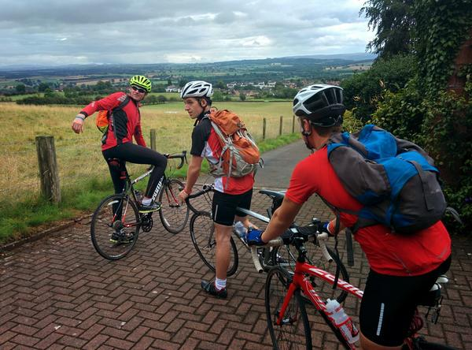We had originally planned this section to complete the major climbs of the middle section in one day. It turned out to be a very short day, about three and a half hours (excluding tops). In retrospect it would have been better to continue beyond Allenheads, but as we had pre-booked accomodation this wasn't possible. With a bit more planning we could have probably completed the route in two days, although for me, this would have been pushing it a bit.
We had arranged to meet my son and his friends at the place they were staying in Penrith about 8:30am. We had planned to have breakfast at the Little Chef, but although the pillar on the outside said it would open at 7:00am, it turned out that it wouldn't in fact open until 8:00am. Somewhat fed up, I decided to cycle down into Penrith and have breakfast at Morrisons. After breakfast, I cycled up the steep hill to the house where my son was staying. The house was actually on the C2C, which made initial route finding straightforward.
My son and his friends raced off in front while my brother in law and myself followed at a more sedate pace. Once again the weather looked decidedly dodgy, with cloud obscuring the moors in front of us. We passed through Langwathby . There followed several sections of up and down, but nothing too steep. We could see cars climbing the A686, high up on the moors, in the distance. The tops were covered in cloud, so we couldn't see that cafe.
Looking back from Hartside cafe
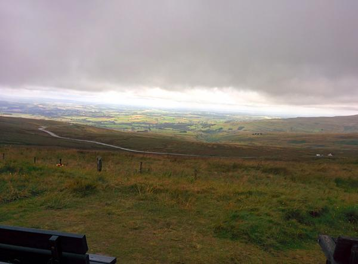From the description I had expected the hill up to Hartside to be challenging. However, it turned out to be much easier than many of the other lesser hills. It's long, but apart from a very short section, where the route joins the main A686, it's not particularly steep. I managed to maintain a respectable pace and only stopped to take photos. I arrived at the cafe just as the cloud lifted. I couldn't have timed it better. The cafe wasn't too busy and a couple of cups of tea with an apricot slice were very welcome.
The descent from the cafe was very pleasant. Although it's on an A road, there was very little traffic. Not having seen any traffic for the last three miles, as soon as I wanted to turn right at Leadgate a veritable convoy suddenly appeared behind me. The ride down into Garigill was pleasant. However, the initial section out of there was a shocker. After overcoming the very steep start, the hill goes on, and on, and on. However, the subsequent sections aren't too steep and there are fine views all around. We stopped for a drink and some food at the top of the hill before beginning the descent towards Nenthead. Just before arriving at Nenthead there is a very steep descent. This culminates in a couple of very sharp bends and the road is very potholed. There are several signs warning you to slow down. Take note! Going too fast will result in a painful crash.
Crossing into Northumberland

My wife was waiting at Nenthead and we stopped for a chat and some more to drink. After an initial steep climb out of the village we turned off along the B road to climb up to the top of Black Hill, the highest point of the C2C. There follows a short descent before another small hill. After that it's a great downhill ride all the way to Allenheads.
View from above Nenthead
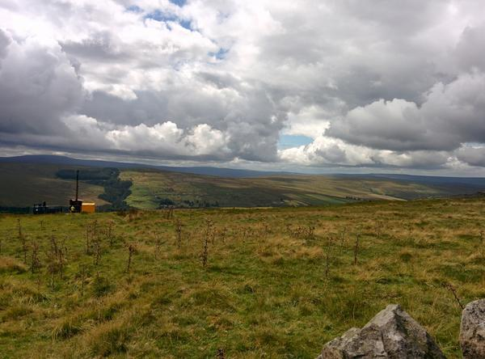The village of Allenheads is quite stretched out and the pub and our accommodation were at the far end. My son and his friends stayed in the pub, ee stayed at Newhouses, which was a short way out of the village up a track. The proprietor seemed very confused about exactly who she had booked in, despite email confirmations. However, we sorted it out eventually. The accommodation was superb. The rooms were large and comfortable. Downstairs there was a separate residents lounge and kitchen.
After a short rest, we wandered down into the village to join the others at the pub. We had an enjoyable meal and a few drinks before wandering back up the road to our beds.
Sculpture on the outskirts of Consett
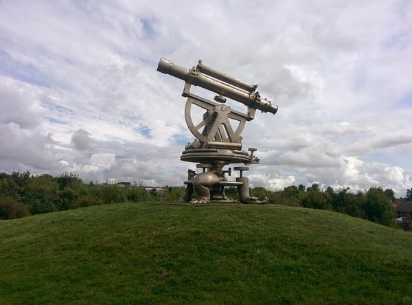When I got up in the morning, I felt slightly sick and couldn't eat much of the excellent breakfast. Luckily I recovered after a couple of hours on the bike, but was a bit worried about how the day might go. I wanted to get to Newcastle as early as possible, so I would be able to get back to Whitehaven in time to drive home. I was also worried about not being able to get my bike on the train.
Almost as soon as I left the village there was a steep hill. This lead through a series of tight bends and was hemmed in by forestry. Just what you don't need first thing when not feeling too well! However, I made it to the top, where a van was disgorging the beaters for the days grouse shooting. The following downhill section to Rookhope was the most enjoyable descent of the whole trip. It's just the right gradient to coast, with the occasional boost from the pedals.
In Rookhope I ignored the off road section and continued on along the road to Stanhope. The climb out of Stanhope was without question the toughest of the whole C2C. Overall the hill wasn't too bad, but there are two sections of 1 in 3 or 1 in 4 near the start. I managed the first section, but gave up and walked on the second one. Eventually the road reaches the start of the Waskerley Way. I wasn't sure about doing this on a road bike, although my son took this route and said it was fine. I needed to do even more climbing before I reached a small B road that descended parallel to the Waskerley Way. This was a great descent, most of it just coasting along. At the end there was a bit of ascent to rejoin the Waskerley Way.
On the outskirts on Consett I stopped for a breather and the others caught me up. We cycled past the old smelt wagon at Widgetts Junction and missed out turn off to Newcastle. Luckily a local cyclist helped us out with directions and we were soon back on the right route. Most of the rest of the route follows an old railway with a good surface. I just wanted to get to the end, so just put my head down and pushed on. Finally I emerged next to the river and got a bit confused when I seemed to be cycling the wrong way. However, it turned out OK as I needed to reach the A695 road bridge to cross the river. From here the C2C shares the route with the Hadrians Way cycle path.
I could seen some rain blowing up the river towards me and about two miles from the end I was engulfed in a downpour. There was no point in stopping to get out waterproofs, as I was soaked in a few seconds. I ploughed on, stopping only to ask someone in a bus shelter how to get to the station. His directions were spot on, but finding the entrance was problematic. I met up with my brother in law, who was having the same problem! Eventually, we got into the station where a very helpful member of staff told us that there was a train to Carlisle leaving in about 10 minutes. We raced onto the platform, where we discovered that this train had space for six bikes and all the slots were empty, so we had at least got our bikes onto this train OK.
Once I sat down I started to feel very cold. I had no spare clothes, so just dripped and shivered all the way to Carlisle. There was a train to Whitehaven ready to depart. This train does only have two bike spaces, but the guard was fine about me just sitting and holding onto my bike. Finally I was back in Whitehaven in the early afternoon. I went to Tescos for a hot drink and some food before cycling back to Chestnuts to pick up the car. I had a brief chat with the owners before setting off back home. Unfortunately, junction 16 on the M6 was closed at night for repairs. I could have come off at an earlier junction, but there were no signs before junction 16 indicating that it was closed! This added an unnecessary extra 30 miles to my journey.
I spite of the drenching and extra unnecessary 30 miles driving home, I had enjoyed the last day. I would like to do the route again, but next time I'll try and do in two days.
{kind=link}
{kind=link}
{kind=link}
{kind=link}
{kind=link}
{kind=link}
{kind=link}
{kind=link}
{kind=link}
{kind=link}
{kind=link}
{kind=link}
{kind=link}